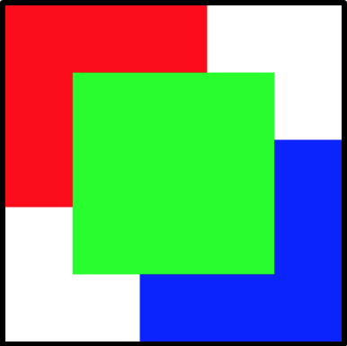

Задание 1
Создать 2 html - файла (табличная и блочная вёрстка), каждый из которых будет выглядеть в браузере следующим образом:- сумарно, все блоки должны занимать весь экран (без пролистываний)
- цвета выбрать на ваш вкус
- все стили должны быть вынесены в отдельный файл ( по 1 css-файлу на 1 html-файл) * использование разных видов позиционирования приветствуется
Задание 2
Создать html документ и соответствующий ему css документ, реализующие следующую разметку:- 
Задание 3
Создать html документ и соответствующий ему css документ, реализующие следующую разметку:- блок - хедер, шириной в 90% (отступы справа и слева по 5 %) и высотой в 15%, закругленные нижние углы
- боковое зафиксированное (position:fixed) меню шириной в 10% и высотой в 600px. Задний фон - полупрозрачный. Меню содержит ссылки на задания 1 и 2.
- центральный блок, наполненный текстом, нумерованным списком.
- внизу страницы должен быть блок - футер, содержащий какие-либо данные(ширина - 90%,отступы справа и слева по 5%, высота 15%, закругленные верхние углы).
Задание 4
Создать html документ и соответствующий ему css документ, реализующие следующую разметку:- блок - хедер, шириной в 100% и высотой в 10%, меняющий цвет заднего фона при наведении, полупрозрачный, содержащий 2 картинки (справа и слева, выравнивание по высоте - по середине)позиц.-Fixed.
- основной блок - текст в 2 колонки, отступы по 15 % от края, контрастная граница сбоку (справа и слева), цветная подложка, отступ от футера - 50px.
- блок - футер содержит 2-3 строчки текста, 100% шириной и до 15% в высоту. полупрозрачный. При наведении становится непрозрачным ( псевдоклассы + rgba)